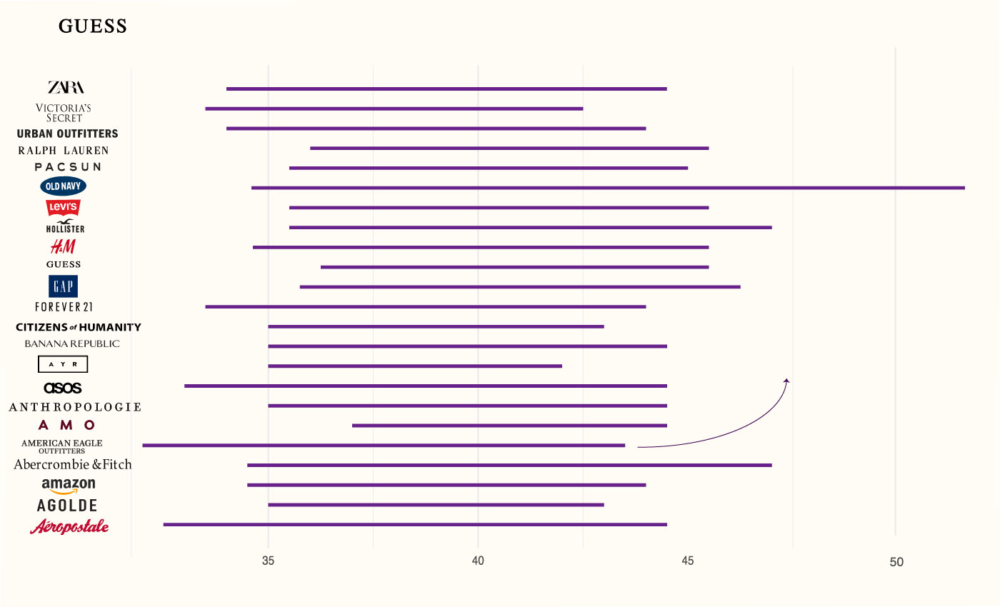
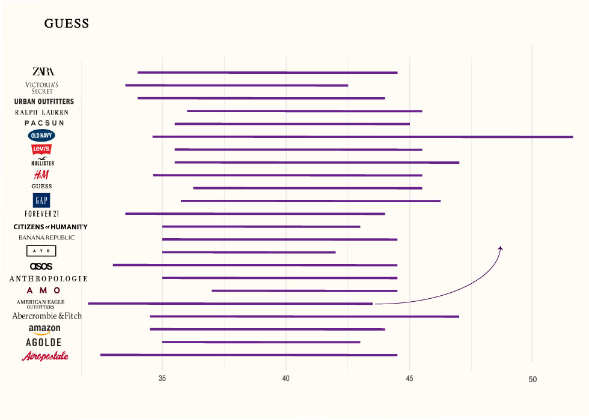
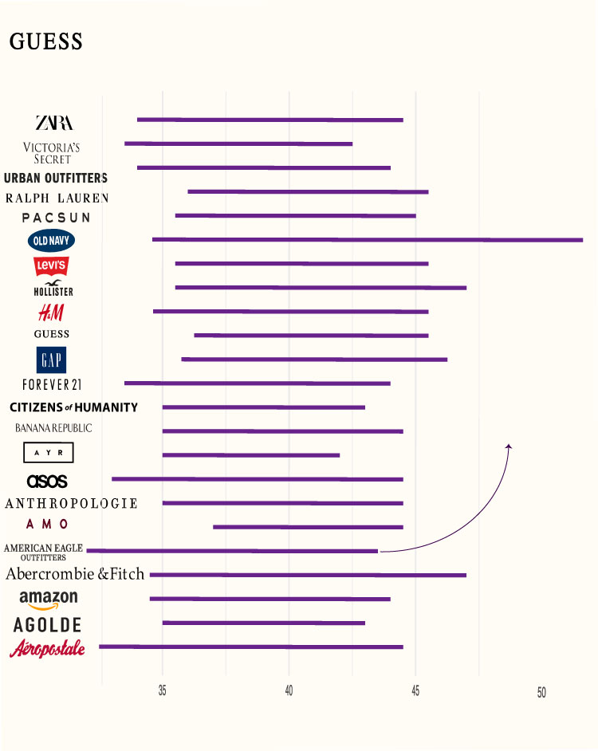
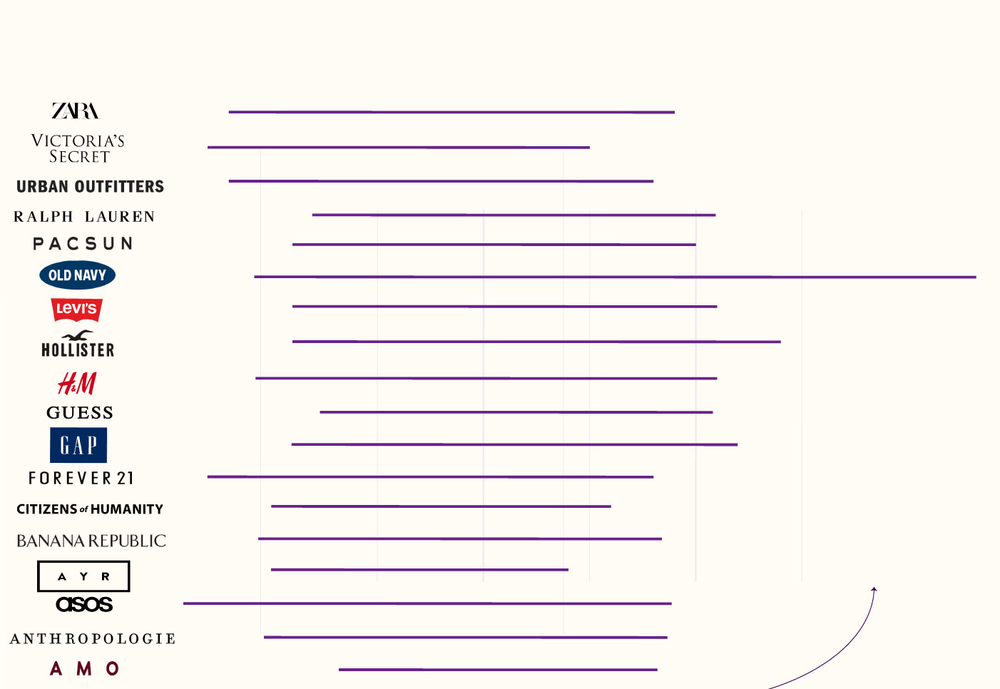
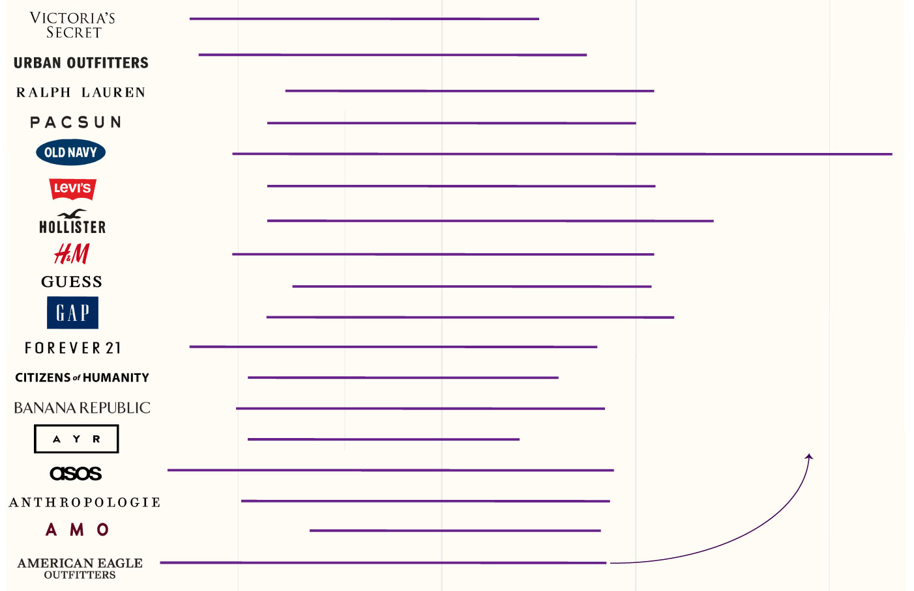

To slip into a new pair of size double zero jeans felt like an achievement, said Aleena Ahmed, a resident of New Jersey.
“I didn't even want to take the tag off,” she said about her American Eagle jeans. “It was like a marker of 'I did it.'”
Perhaps it was her slim tall Barbie dolls growing up or the eruption of skinny beauty standard posts titled “Thinspo” on Tumblr, but Ahmed said she would eat less to be thinner. New clothes could monitor the progress.
So when the double zero jeans from Old Navy didn't fit, even though the ones from American Eagle did, Ahmed said it tripped her out and made her “feel unattractive.”
Different jean sizes fitting Ahmed is an example of vanity sizing, where clothing brands label their clothes smaller than they actually are.
After multi page scraping a range of brands from sizecharter.com
and scraping over thirty separate brand websites for size charts, I found that high-end brands like AMO, AYR and Agolde had a smaller range of hip sizes from XS to XL compared to fast fashion brands like Old Navy or Ambercrombie & Fitch.

What fast fashion and high-end brands categorize as XS to XL in hip sizes
Each brand’s range of hip sizes in inches from extra small (XS) to extra large (XL)
American Eagle had the
smallest small (S) hip size
starting at 32 inches.
High-end brand AMO had the
largest small (S) hip size at
37 inches.
Source: Ananya Chetia
CleanPNG and pnegg provided the logos.

whose jeans stretch the least
Each brand’s range of hip sizes in inches from extra small (XS) to extra large (XL)
American Eagle had the
smallest small (S) hip size
starting at 32 inches.
High-end brand AMO had the
largest small (S) hip size at
37 inches.
Source: Ananya Chetia
CleanPNG and pnegg provided the logos.

whose jeans stretch the least
Each brand’s range of hip sizes in inches from extra small (XS) to extra large (XL)
American Eagle had the
smallest small (S) hip size
starting at 32 inches.
High-end brand AMO had the
largest small (S) hip size at
37 inches.
CleanPNG and pnegg provided the logos.
Source: Ananya Chetia

What fast fashion and high-end brands categorize as XS to XL in hip sizes
Each brand’s range of hip sizes in inches from extra small (XS) to extra large (XL)
American Eagle had the
smallest small (S) hip size
starting at 32 inches.
High-end brand AMO had the
largest small (S) hip size at
37 inches.

Each brand’s range of hip sizes in inches from extra small (XS) to extra large (XL)
American Eagle had the
smallest small (S) hip size
starting at 32 inches.
High-end brand AMO had the
largest small (S) hip size at
37 inches.
Sizes are often categorized as small, medium, large and extra large, with plus sizes, petite sizes and tall sizes having separate measurements. Jean sizes for the majority of the brands I scraped traditionally follow a size zero to size 16 range, but for the sake of consistency, I am using letter sizing for my analysis.
Identifying sizes as letters or numbers do not impact the data as they are just variables. It is what we categorize as a small or size two that varies.
For Ahmed, the numbers on a pant's tag measured her self-worth.
"Logically, I understand that my health is important," Ahmed said. "There are moments i get bad at it, just to see a pair of small pants not tighten up on my stomach."
Research shows one's mental image about being a larger size than what a size tag states may be detrimental to self-worth.
Critics say there are downsides to a universal size guide too.
"This is because standard body measurements are based on data. And that data will always be limited to the number and types of bodies sampled...Standard measurements and sizing will never be able to capture the nuances and unique fit and style preferences of every single shopper," an article from sizebay said.
Jean sizes are not the only culprit to vanity sizing. Women's tops require measuring the bust in inches or centimeters. As seen in the interactive chart below, for over 100 brands, a bust measurement for an XL top ranges from 38.5 inches to 47 inches.
According to the Centers for Disease Control and Prevention, the average waist size for women is 38.7 inches. Majority of the brands in this dataset categorize this average waist size as large or even extra large. One-size-all stores like Brandy Melville, who refused to give me their size chart, sell jeans with an average waist size of only 30 inches.
With no universal size guide, brands design their own to cater to their audience and make consumers feel good picking up clothing as size small, said Patience Billingsley, a graduate of the University of Arkansas, where she conducted research on vanity sizing.
"[Vanity sizing] is also unethical and it can be manipulating to tell customers a size they are not," said Billingsley.
As online shopping
increases
especially post the 2020 pandemic, so does the trend of returning clothes that don't
fit
.
Bracketing is when consumers order the same apparel in multiple sizes and return what doesn't fit. The practice sounds harmless but returning packages means higher emissions and waste since packages are dumped in landfills.
Returned retailed packages led to 8.4 billion pounds of waste in 2023, according to a report from Optoro Meanwhile 24 million metric tons of emissions were released from transporting returned goods in 2022.
The variety in what constitutes a “small” waist or “large” bust in clothes makes the concept of what our sizes actually are irrelevant, Ahmed said.
Despite vanity sizing being inconsistent across major brands, clothing size and body image are a persistent thought for Ahmed. That's what hurts the most, she said.
“I want my life to be bigger,” Ahmed told me. “This is the physical body I have and I want my life to be about other things.”
First off, I am incredibly grateful to have spoken to Aleena and Patience. Thank you for trusting me with your stories on body image and vanity sizing.
Our assignment includes finding a dataset or making a dataset within two weeks, in addition to interviewing multiple sources and producing a polished story within 14 days. Sometimes our deadline is cut short by seven days. I decided to make the challenge fun and multi-page scrape a website called sizecharts.com and individually scrape 30 more clothing brands.
For my first chart, I wanted to look at affordable jean brands for college women and compare it to top high-end jean brands. I relied on two lists that helped me
build my dataset.
a. This link gave a comprehensive list of popular, high-end brands that provide jeans for women.
I merged these list and made a dataset that looked what each brand constitutes as a extra small, small, medium, large and extra large.
From there, I found that high-end jean brands had a smaller range of sizes between XS to XL versus fast fashion brands.
There's more to how I developed my datasets.
We can chat about it, you can email at ac5708@columbia.edu or check out my GitHub's ReadMe, which gives a detailed explanation of how this story came to be.